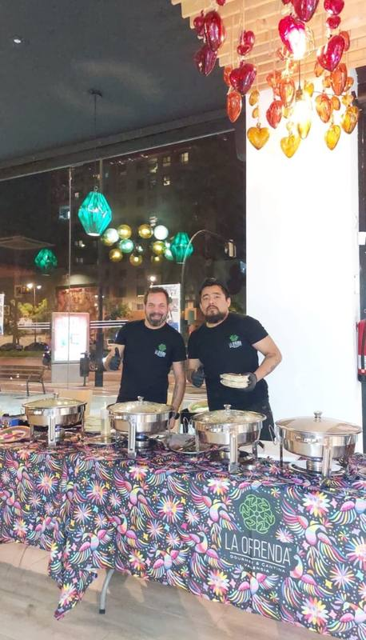
Eventos y catering
- Fiestas privadas
- Bodas
- Eventos temáticos
- Cumpleaños o cenas especiales
- Eventos corporativos
Ambientaciones temáticas personalizables para eventos privados.
Catering mexicano (taquiza) y coctelería
Auténtica cocina mexicana para eventos, ferias y tu hogar. Más de 4 años compartiendo sabor, cultura y raíces en España.
Pedir presupuesto sin compromisoNuestros servicios

Ambientaciones temáticas personalizables para eventos privados.
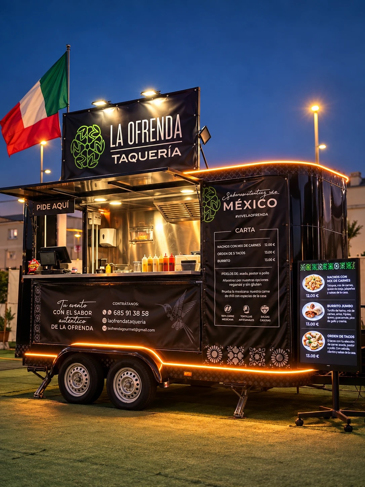
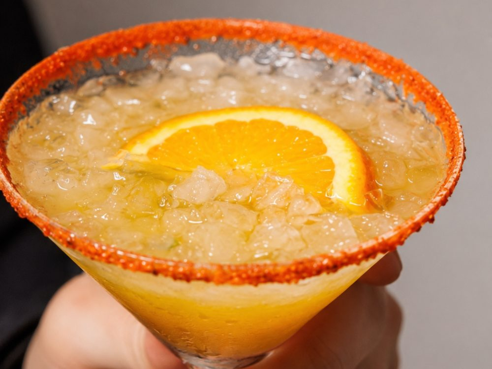
Experiencia
Más que un catering, nuestro food truck es toda una experiencia. Eleva tu evento con nuestro food truck, ideal para bodas, eventos corporativos, festivales y mucho más.
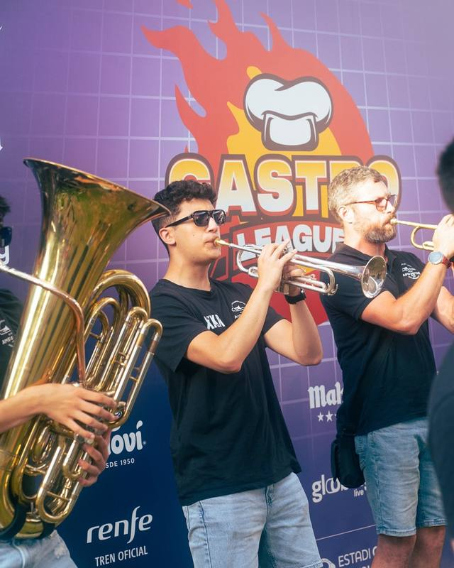
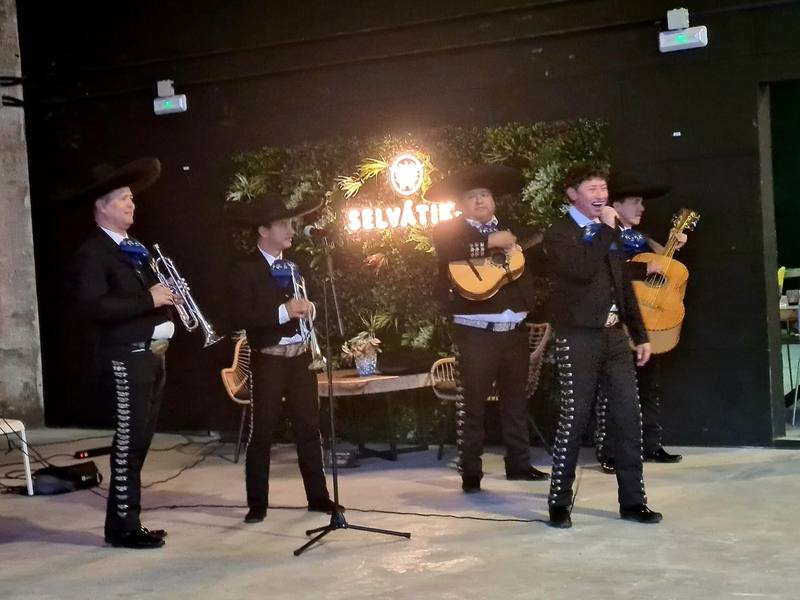
Míralo en acción
Eventos a los que hemos asistido
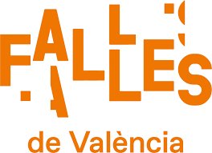
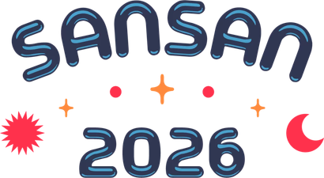
Segundo premio en la Gastro League de València 2025 · Conciertos en el Estadi Ciutat de València (Carín León, 13 de julio) · Fira Alzira Oberta
Por qué elegirnos
Recuerdos de La Ofrenda
Un recorrido por momentos y ambientaciones de años anteriores. Son recuerdos de nuestra trayectoria, no actividades que ofrezcamos de forma habitual.
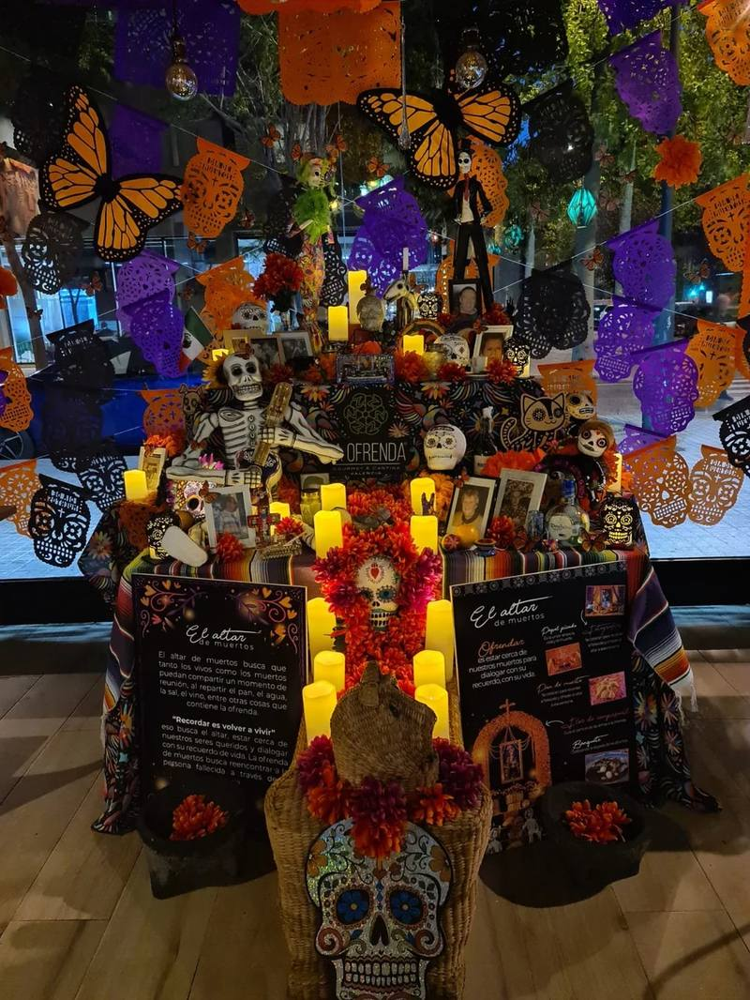
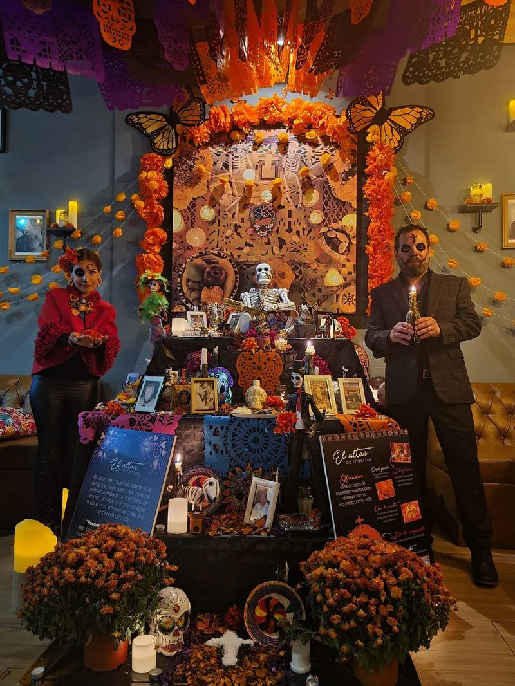
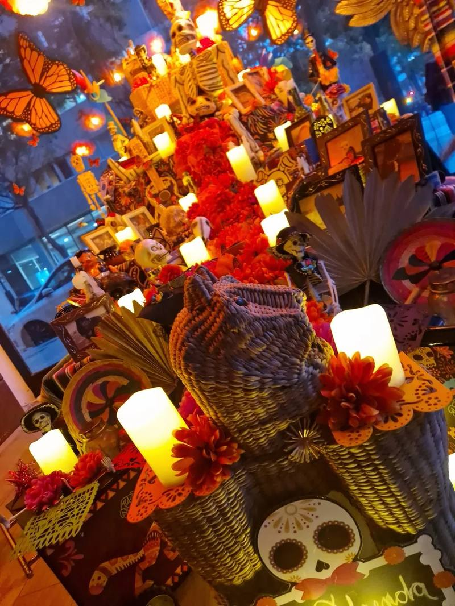
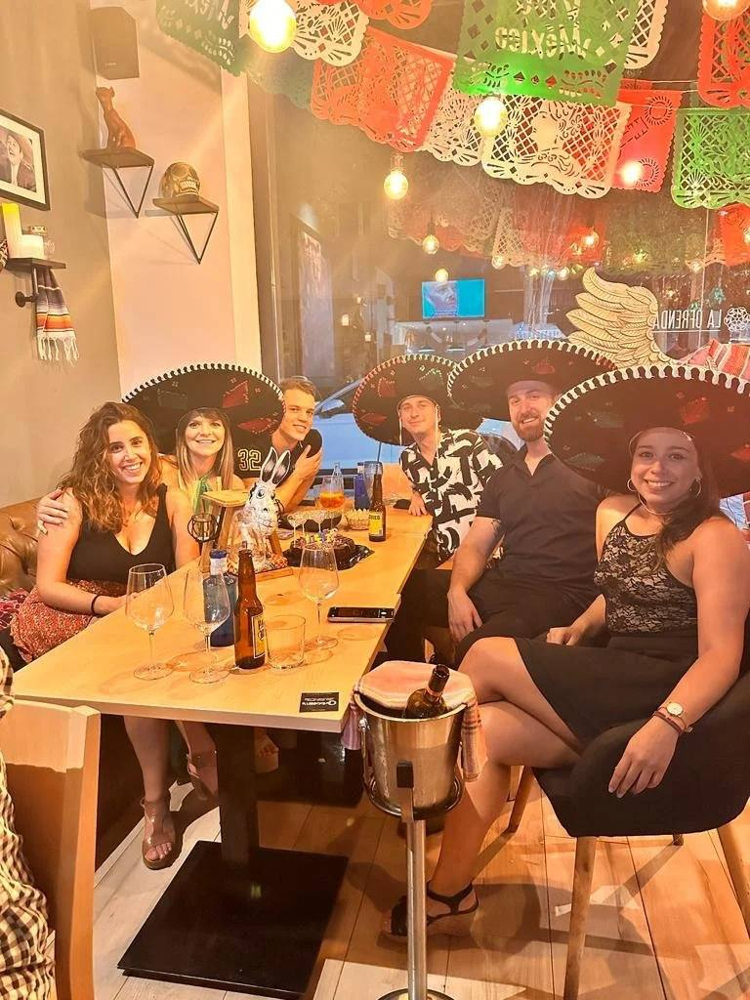
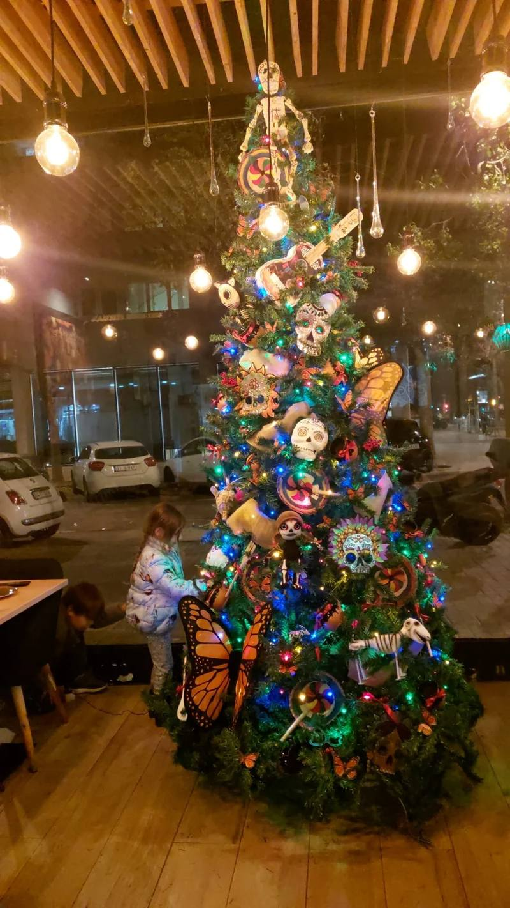
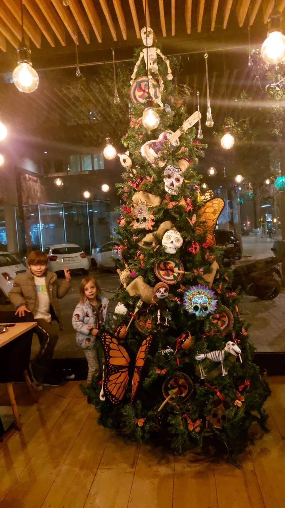
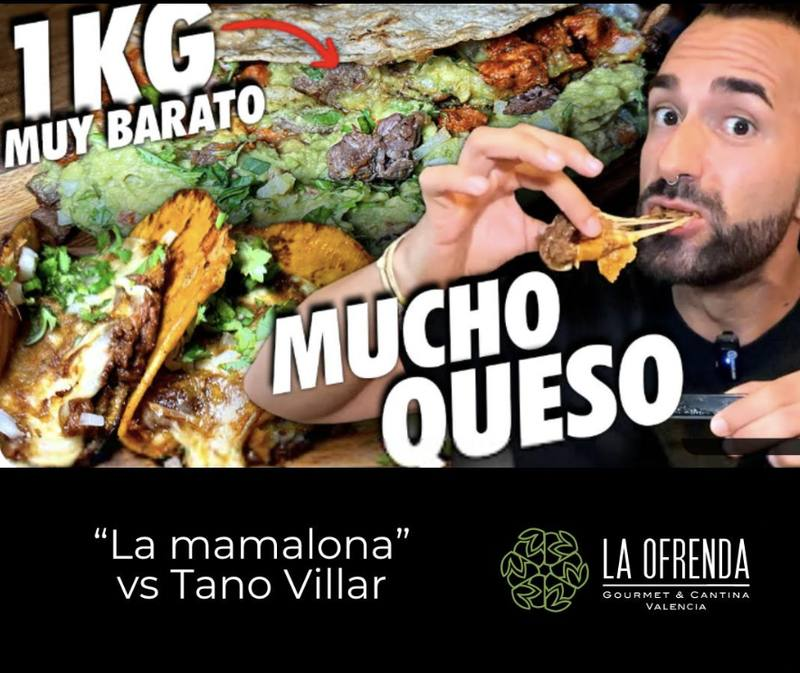
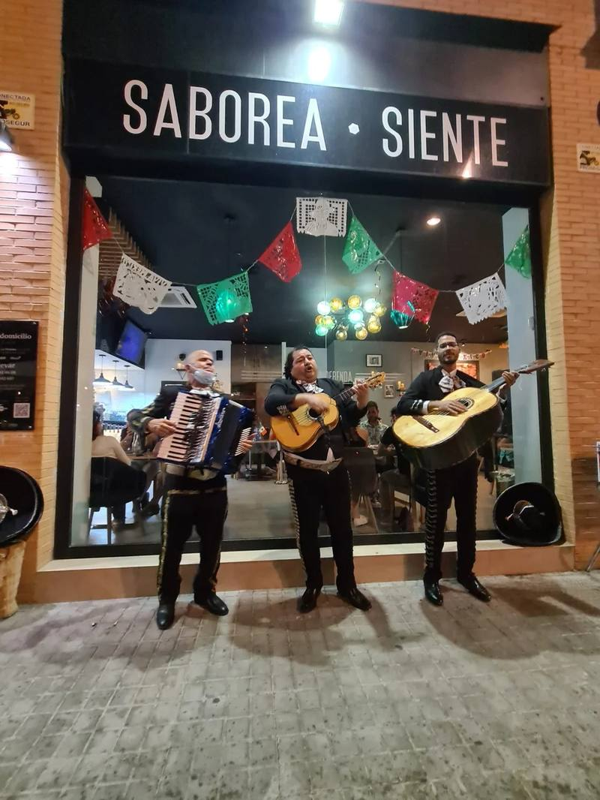
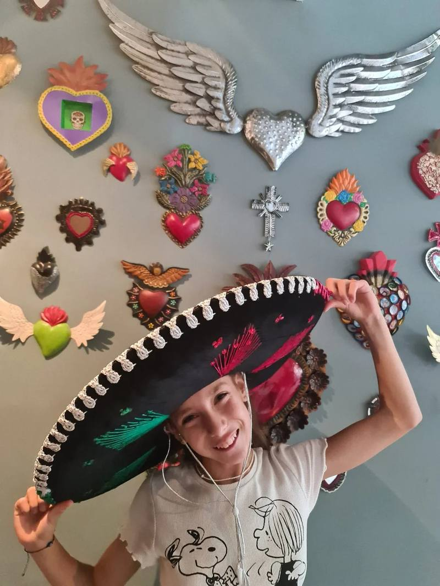
Reseñas de clientes
“Espectacular Día del Taco, jueves por la noche, disfrute de su buffet en compañía de amigos. Con una buena atención y explicación de sus variantes. Hay que probarlos ;)”
“Háganse el favor de ir a este lugar tan maravilloso. El ambiente y el servicio 10/10 y la comida toda una exquisitez. Sin duda una de las mejores experiencias que pueden vivir en La Ofrenda.”
“La comida estaba bien guisada y sabrosa con tortitas de maíz recién hechas. […] Tuvimos la suerte de tener música en directo, estuvo muy entretenido y cantaba fenomenal. Un buen ambiente en el local.”
Preguntas frecuentes
Sí. A partir de 20 personas contamos con el servicio de guisos y de coctelería.
Escríbenos a contacto@laofrendataqueria.com con la fecha, el lugar y el número de invitados.
Avísanos de cualquier alergia o restricción y te ofrecemos opciones adecuadas.
Con la mayor anticipación posible, sobre todo en eventos grandes o temporada alta; lo ideal es un par de meses. Si tienes menos tiempo, escríbenos y lo vemos.